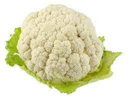

What is demon slayer
Demon slayer is a anime
In Adventure mode, follow Tanjiro through the story from the "Demon Slayer: Kimetsu no Yaiba" anime as he face demons in order to turn his sister Nezuko, who has become a demon, back into a human.In Versus Mode, characters from the anime, including Tanjiro and Nezuko, can be freely matched against each another in a 2 vs 2 setting with up to 2 players on or offline! Enjoy this simple but exhilarating battle system, and become the greatest demon slayer you can!
 click to visit